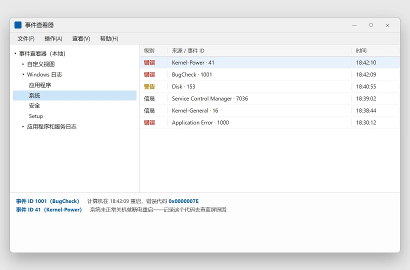

电脑蓝屏了怎么办：先学会读蓝屏代码
⚠️ 需谨慎：本文会卸载更新、回退驱动并检查硬件。动手前先把重要文件备份到 U 盘或网盘。
💡 一句话结论
蓝屏上的那行代码不是给你猜的：停止代码说明哪一类部件出问题，下面的 .sys 文件名往往就是元凶驱动。先拍照记下代码，再去事件查看器确认，然后从「最近装了什么」开始回退。
⚡ 30 秒快速排查（先试这个）
- 先拍照。 把整屏拍下来，重点是停止代码（如
IRQL_NOT_LESS_OR_EQUAL）、错误编号（如0x0000000A）和下面那个文件名（如nvlddmkm.sys）。 - 回想最近装了什么。 蓝屏前装过驱动、杀软、外设、系统更新？按本文步骤 4 先卸载它，这一步能解决大多数「突然开始蓝屏」。
- 偶尔蓝屏一次、之后一切正常，可以先观察：去「事件查看器 → Windows 日志 → 系统」看是否有 1001 号 BugCheck 记录，记下时间和代码，再决定要不要动手。
纯小白模式 · Windows
小白一键修复
不想研究原因，就下载脚本，右键选择“以管理员身份运行”。脚本执行前仍会再次确认。
- 适合Windows 10/11，蓝屏后自动重启，没拍到停止代码。
- 脚本会导出最近的 41、1001、6008 号系统事件，列出
C:\Windows\Minidump里的转储文件。 - 运行前用管理员账户登录并接上电源；脚本不会分析、移动或删除转储文件。
- 注意报告只保存在桌面，不会上传；它负责收集证据，不等于自动修好蓝屏。
运行方式：下载后先解压（如有），右键 BAT 文件 → 以管理员身份运行 → 阅读提示后选择 Y。浏览器若提示“不常见文件”，请先核对文件名与下方源码。若浏览器无法下载，点“复制全部脚本”，粘贴到记事本，保存类型选择“所有文件”，文件名以 .bat 结尾。
查看完整 BAT 源码
@echo off
chcp 65001 >nul
setlocal EnableExtensions
title 修盒子 - 导出蓝屏证据
fltmc >nul 2>&1
if errorlevel 1 (
echo 正在请求管理员权限...
powershell -NoProfile -Command "Start-Process -FilePath '%~f0' -Verb RunAs"
exit /b
)
echo ============================================================
echo 修盒子 - 导出蓝屏证据
echo ============================================================
echo 适用于：电脑蓝屏后自动重启，没来得及看清停止代码。
echo.
echo 将导出近期异常关机与 BugCheck 日志，并列出系统的小内存转储文件。
echo 不会分析、移动或删除转储文件，也不会修改系统设置。
echo 报告只保存在本机桌面，不会上传。
echo.
choice /C YN /N /M "确认继续？[Y/N] "
if errorlevel 2 goto :cancelled
set "REPORT=%USERPROFILE%\Desktop\Fixbox-BlueScreen-%RANDOM%.txt"
echo 正在读取事件日志...
> "%REPORT%" echo 修盒子蓝屏证据报告
>> "%REPORT%" echo 生成时间：
>> "%REPORT%" powershell -NoProfile -Command "Get-Date -Format 'yyyy-MM-dd HH:mm:ss'"
>> "%REPORT%" echo.
>> "%REPORT%" echo [事件 ID 41 / 1001 / 6008，最近 50 条]
>> "%REPORT%" echo ------------------------------------------------------------
wevtutil qe System /q:"*[System[(EventID=41 or EventID=1001 or EventID=6008)]]" /c:50 /rd:true /f:text >> "%REPORT%" 2>&1
>> "%REPORT%" echo.
>> "%REPORT%" echo [Minidump 文件列表]
>> "%REPORT%" echo ------------------------------------------------------------
if exist "%SystemRoot%\Minidump" (
dir /a "%SystemRoot%\Minidump" >> "%REPORT%" 2>&1
) else (
>> "%REPORT%" echo 未找到 C:\Windows\Minidump 文件夹。
>> "%REPORT%" echo 可能尚未启用小内存转储，或本次不是内核蓝屏。
)
>> "%REPORT%" echo.
>> "%REPORT%" echo [使用提示]
>> "%REPORT%" echo ------------------------------------------------------------
>> "%REPORT%" echo 1. 先在报告中搜索 BugCheck、0x 开头的代码和 .sys 文件名。
>> "%REPORT%" echo 2. 小内存转储位于 C:\Windows\Minidump，可交给维护人员分析。
>> "%REPORT%" echo 3. 报告可能含电脑名与软件名，分享前请先检查。
echo.
echo 报告已保存到：
echo %REPORT%
start "" notepad "%REPORT%"
if exist "%SystemRoot%\Minidump" start "" explorer.exe "%SystemRoot%\Minidump"
goto :end
:cancelled
echo.
echo 已取消，没有读取或写入报告。
:end
echo.
pause
endlocal
适用 / 不适用
适用：
- 出现蓝底「你的设备遇到问题，需要重启」+ 停止代码
- 蓝屏后自动重启，来不及看清代码
- 隔几天蓝屏一次，想找出规律
- 蓝屏后能正常进系统，只是偶尔再犯
不适用（请转对应文章）：
- 蓝屏后进不去系统、卡在 Logo → 电脑开机一直转圈 / 卡在品牌 Logo 进不去系统
- 开机黑屏只有鼠标指针 → 电脑开机黑屏只有鼠标指针，怎么救回来
- 每次都在装 Windows 更新时蓝屏 → Windows 更新卡在 0% / 一直失败，怎么强制修好
- 屏幕要求输入 BitLocker 恢复密钥 → 先找回密钥，再去 account.microsoft.com/devices/recoverykey
开始前确认
- 已经拍到或抄下蓝屏代码（没有也没关系，事件查看器里能补看）
- 能正常进入系统，并拥有管理员账户
- 重要文件有备份
- 回忆蓝屏前 3 天内的变化：驱动、软件、外设、系统更新、清灰或搬运
- 台式机可以打开侧板，方便后面重插内存（可选）
怎么确认修好了
连续使用 3-5 天，事件查看器里没有新的 1001 号 BugCheck 事件，也没有 41 号 Kernel-Power 意外关机记录，并且睡眠唤醒、开机、跑大型软件都不再蓝屏，就算解决。
还是不行？
- 蓝屏只发生在装系统更新时 → Windows 更新卡在 0% / 一直失败，怎么强制修好
- 蓝屏后直接进不了系统 → 电脑开机一直转圈 / 卡在品牌 Logo 进不去系统
- 代码指向硬件（0x124、内存/硬盘检测已报错） → 先备份数据，再联系维修点检测
- 公司电脑或装了企业管控软件 → 联系公司 IT，不要自行卸载安全软件
- 新买不久、还在保修期 → 走官方售后，附上蓝屏照片和代码
预防
- 驱动只从厂商官网或 Windows 更新装，装前创建还原点。
- 不要用「驱动精灵」「一键优化」类工具批量更新驱动。
- 机箱定期清灰，内存条每 1-2 年重插一次，避免接触不良。
- 保留至少 15% 的 C 盘空闲空间，磁盘长期满载会加剧文件系统错误。
- 重要数据定期备份；硬盘出现异响或健康度下降就尽早更换。
更新日志
| 日期 | 版本 | 变更 | 作者/审核 |
|---|---|---|---|
| 2026-10-27 | 1.1 | 增加蓝屏事件与转储文件导出脚本 | 内容组 |
| 2026-10-11 | 1.0 | 首版发布：蓝屏代码读法 + 八步排查 | 内容组 |
分步骤
蓝屏发生当下该做什么
目的：保住线索，避免把能定位的问题变成查不出来的随机故障。
操作：
- 用手机拍下整屏，别只拍代码那一行，下面的文件名同样重要。
- 如果电脑卡在 0% 不收尾，等待 5 分钟；仍无反应再长按电源键 10 秒关机。
- 记下时间点，后面去事件查看器按时间找。
- 重启后不要马上继续工作，先按步骤 2 把日志导出来。
预期结果：拿到停止代码、错误编号和 .sys 文件名三样线索。失败怎么办？
屏幕太快看不清 → 关掉自动重启（见步骤 7 的「启动和故障恢复」），下次蓝屏就会停在屏幕上。从事件查看器里把代码读出来
目的：蓝屏会自动记录到系统日志，代码和转储文件都能在这里找到。
操作：

蓝屏记录在「事件查看器 → Windows 日志 → 系统」里：级别为「错误」、来源 BugCheck、事件 ID 1001 的那条就是，双击能看到停止代码。 - 按 Win+R，输入
eventvwr.msc回车。 - 左侧依次展开「Windows 日志 → 系统」。
- 右侧点「筛选当前日志」，事件 ID 填
1001或41。 - 找到 1001 号（来源 BugCheck）的记录，双击查看详细信息，里面有停止代码和参数。
也可以用管理员 PowerShell 一次性拉出来：
Get-WinEvent -FilterHashtable @{LogName='System'; Id=1001,41} -MaxEvents 20 | Format-List TimeCreated, Id, ProviderName, Message预期结果：能看到类似「计算机已从 bug 检查中重新启动。Bug 检查代码：0x0000000a」的内容；41 号事件来源是 Kernel-Power，代表一次非正常关机。失败怎么办？
查不到任何 1001 记录 → 说明可能不是内核蓝屏（比如显卡驱动崩溃、硬件掉电），按步骤 5 查硬件；日志本身打不开 → 用wevtutil qe System /c:20 /rd:true /f:text试试。- 按 Win+R，输入
对照代码表判断方向
目的：不同代码指向不同部件，先判断大概方向，别盲目重装。
操作：在表里找到你的停止代码，记下「常见指向」，再去对应步骤。
停止代码（常见写法） 常见指向 优先看 IRQL_NOT_LESS_OR_EQUAL（0x0000000A） 驱动或内存 步骤 4、5 PAGE_FAULT_IN_NONPAGED_AREA（0x00000050） 内存或驱动 步骤 5 SYSTEM_SERVICE_EXCEPTION（0x0000003B） 驱动、系统文件 步骤 6 KMODE_EXCEPTION_NOT_HANDLED（0x0000001E） 驱动 步骤 4 DRIVER_IRQL_NOT_LESS_OR_EQUAL（0x000000D1） 驱动 步骤 4 MEMORY_MANAGEMENT（0x0000001A） 内存 步骤 5 CRITICAL_PROCESS_DIED 关键系统进程、系统文件 步骤 6 KERNEL_SECURITY_CHECK_FAILURE（0x00000139） 驱动或内存 步骤 5、6 DPC_WATCHDOG_VIOLATION（0x00000133） 驱动、SSD 固件 步骤 4 WHEA_UNCORRECTABLE_ERROR（0x00000124） 硬件（CPU/内存/主板/电源） 步骤 8 INACCESSIBLE_BOOT_DEVICE（0x0000007B） 存储驱动、BIOS 模式 步骤 6、8 UNMOUNTABLE_BOOT_VOLUME（0x000000ED） 文件系统、硬盘 步骤 5 NTFS_FILE_SYSTEM（0x00000024） 硬盘、文件系统 步骤 5 VIDEO_TDR_FAILURE（0x00000116） 显卡驱动 步骤 4 SYSTEM_THREAD_EXCEPTION_NOT_HANDLED（0x0000007E） 驱动 步骤 4 BAD_SYSTEM_CONFIG_INFO（0x00000074） 注册表、启动配置 步骤 6 代码的完整定义和参数含义以微软官方《错误检查代码参考》为准。
预期结果：把代码归入「驱动类 / 内存类 / 系统文件类 / 硬件类」其中一类。失败怎么办？
表里没有你的代码 → 直接在官方《错误检查代码参考》页面搜代码名，或直接跳到步骤 4，从最近变更的驱动和软件查起。卸掉最近装的东西
目的：多数「突然开始蓝屏」由新装的驱动、软件、外设引起，回退最快见效。
操作：
- 拔掉最近新加的外设（采集卡、无线网卡、扩展坞、打印机）。
- 「设置 → Windows 更新 → 更新历史记录 → 卸载更新」，卸掉最近的质量更新。
- 「设备管理器」里找到蓝屏文件名对应的设备（如
nvlddmkm.sys是 NVIDIA 显卡驱动），右键 →「属性」→「驱动程序」→「回退驱动程序」。没有回退按钮就卸载设备并勾选删除驱动，重启后再装官网正式版。 - 「设置 → 应用 → 已安装的应用」，卸载蓝屏前新装的软件尤其是安全软件、加速器、虚拟网卡类工具。
预期结果：卸载并重启后，观察 1-2 天不再蓝屏。失败怎么办？
回退按钮灰掉 → 直接去厂商官网下载上一个稳定版本驱动手动安装；卸载更新报错 → 进恢复环境用「卸载更新」。查内存和硬盘
目的：内存接触不良或坏块、硬盘坏道都会造成随机蓝屏，且代码常来回变。
操作：
- 内存检测：按 Win+R 输入
mdsched.exe→「立即重新启动并检查问题」。重启后自动测试，结果在下次进系统时弹出，也可在「事件查看器 → Windows 日志 → 系统」里找来源MemoryDiagnostics-Results的记录。 - 硬盘健康（管理员 PowerShell）：
Get-PhysicalDisk | Select-Object FriendlyName, MediaType, HealthStatus, OperationalStatus Get-Disk | Select-Object Number, FriendlyName, HealthStatus, OperationalStatus- 在线扫描文件系统（只读扫描，不修改数据）：
chkdsk C: /scan- 如果是知名品牌的 SSD，可安装该品牌官方工具（如三星 Magician、Crucial Storage Executive、铠侠 SSD Utility）查看健康度。
预期结果：内存诊断无错误；HealthStatus显示Healthy、OperationalStatus显示OK；chkdsk 报告未发现问题。失败怎么办？
内存诊断报错 → 关机断电，重新插拔内存条，多条内存只留一条逐个测试；HealthStatus不是 Healthy 或 chkdsk 报大量错误 → 硬盘在衰退，马上备份数据并更换。- 内存检测：按 Win+R 输入
修复系统文件
目的：系统文件或组件存储损坏会导致 CRITICAL_PROCESS_DIED、SYSTEM_SERVICE_EXCEPTION 这类蓝屏。
操作：管理员命令提示符中依次执行：
DISM /Online /Cleanup-Image /RestoreHealth sfc /scannow预期结果：DISM 报「操作成功完成」，sfc 报「未找到完整性冲突」或「已成功修复」。失败怎么办？
DISM 报0x800f081f→ 缺修复源，需要挂载同版本安装镜像当/Source；两条都失败且蓝屏频繁 → 考虑「重置此电脑（保留个人文件）」。让下次蓝屏留下证据（进阶）
目的：偶然蓝屏查不出来时，先确保系统会保存转储文件，再用微软官方调试器分析。
操作：
- 按 Win+R 输入
sysdm.cpl→「高级」→「启动和故障恢复」的「设置」。 - 「写入调试信息」选「小内存转储(256 KB)」，目录默认为
%SystemRoot%\Minidump。 - 取消勾选「自动重新启动」，这样蓝屏会停在屏幕上，能看清代码。
- 复现蓝屏后，从 Microsoft Store 安装微软官方调试器 WinDbg，打开
C:\Windows\Minidump里的 .dmp 文件，在命令栏执行：
!analyze -v预期结果：输出里MODULE_NAME、IMAGE_NAME指向的驱动就是重点怀疑对象。失败怎么办？
看不懂输出 → 把!analyze -v的结果贴上微软社区或厂商支持论坛求助；公司电脑 → 把转储文件交给 IT。- 按 Win+R 输入
判断该不该送修
目的：硬件类蓝屏越修越糟，及时停手更省钱。
操作：出现下列任一情况，不要再折腾软件：
- WHEA_UNCORRECTABLE_ERROR（0x124）反复出现
- 蓝屏代码每次都不一样，且伴随死机、花屏、自动关机
- 内存诊断或硬盘健康检查已经报错
- 清灰、重插内存、换电源后依旧蓝屏
- 机器有焦味、异响、风扇狂转
预期结果：把「已做过哪些排查、蓝屏代码是什么」记下来，交给维修点，能大幅缩短诊断时间。失败怎么办？
在保修期内 → 直接走官方售后，别自己拆机破坏保修封条。
相关教程
最后更新：2026-10-27 · 复核：内容组
读者反馈
这篇教程解决你的问题了吗？
点一下告诉我们结果。「没解决」可以指出问题段落，管理员会回到原文核对并更新。